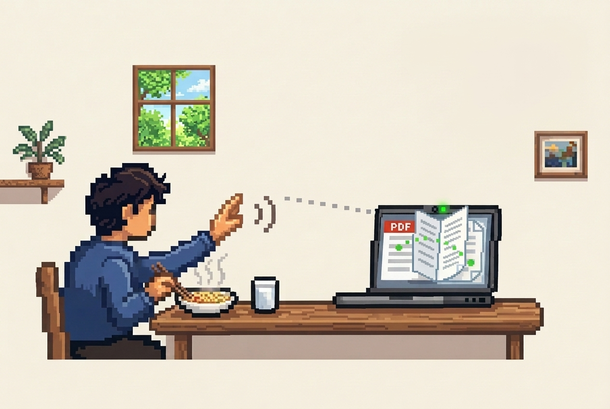

Insho 印章: Gesture-Based PDF Reader circa 2026
“The best interface is no interface.”
— Golden Krishna
When I was a kid, I used to read books and comics while eating (Tintin, Tinkle, ACK etc.). These days I mostly read ebooks and papers, and keeping my laptop close to a plate of food is not quite convenient. One misstep and I could have a hole in my pockets.
So I built Insho 印章: a hands-free, camera-powered PDF reader that lets me navigate documents entirely with hand gestures (turning pages, smooth scrolling via a floating virtual joystick, and pinch-to-zoom), so I can sit comfortably away from the computer without touching it.
Under the hood, it runs Google MediaPipe HandLandmarker directly on-device using WebAssembly and WebGL. A custom heuristic gesture engine translates 21 3D hand landmarks into actions in real time, keeping everything private without uploading any video or documents to the cloud.
I still use it occasionally (roughly once a week or a few times a month), which is probably the real test of whether this side project was useful.
